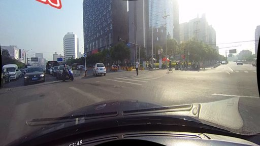
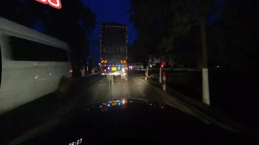
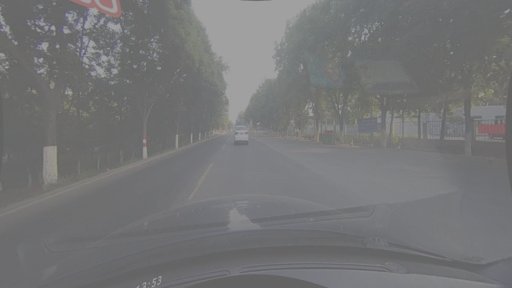
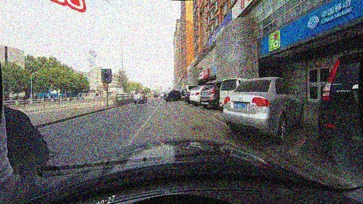

NC-Conv adapts CNN processing based on input quality — robust static path for degraded regions, expressive dynamic path for clean ones. One framework for images and video.
Click a condition to see NC-Conv's σ gate adapt in real-time:




NC-Conv detects lanes in real-time, even in near-zero visibility. Click to switch between normal and dark conditions.
NC-Conv's advantage grows monotonically with corruption severity — directly predicted by the noise propagation bound O(σ4+) → O(σ2).
Frame-independent models lose accuracy on degraded frames with no recovery path. Bi-NC-SSM propagates clean-frame context through temporal dynamics — +35.2% on the darkest tunnel frame while preserving clean accuracy.
Train with full temporal context (past + future) for optimal learning. Deploy with forward-only (causal) path for real-time streaming at 1-frame latency.
NC-Conv + causal NC-SSM deploys on a $8 microcontroller, enabling real-time ADAS for tunnel and night driving.